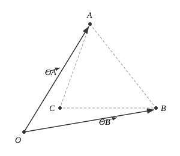
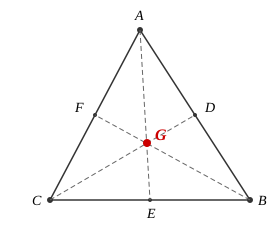
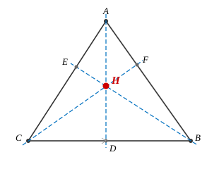
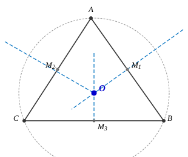
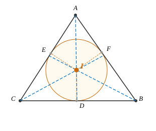

向量与三角形⚓︎
Abstract
向量与三角形的综合问题在高考中常以中档题形式出现，本讲系统整理向量背景下三角形的面积公式与五心（重心、垂心、外心、内心）的向量性质。
一、三角形面积公式⚓︎
1. 基本公式⚓︎
设 \(O\) 为坐标原点，\(A\)、\(B\)、\(C\) 为三角形三个顶点，则 \(\triangle ABC\) 的面积为：

2. 迁移：三点都不在原点的情形⚓︎
若三点都不在原点，则有：
若 \(\vec{OA} = (x_1, y_1)\)，\(\vec{OB} = (x_2, y_2)\)，则：
Tip
证略，由向量叉积的几何意义可得。
二、三角形五心⚓︎
1. 重心（中线交点）⚓︎

性质：
① 重心将每条中线分为 \(2:1\)（从顶点到对边中点），即：
② 若 \(A(x_1, y_1)\)，\(B(x_2, y_2)\)，\(C(x_3, y_3)\)，则：
③ 重心将三角形面积三等分：
④ ★ \(G\) 点满足 \(GA^2 + GB^2 + GC^2\) 最小（即当 \(G\) 在平面内任一点处时，\(TA^2 + TB^2 + TC^2\) 最小时，\(T\) 即为重心）。
向量性质：
★ 若 \(\vec{AP} = \lambda \left(\frac{\vec{AB}}{|AB| \sin B} + \frac{\vec{AC}}{|AC| \sin C}\right)\)，则 \(A\)、\(P\)、\(G\) 三点共线。
例题：
若 \(\vec{AB} = m\vec{AM}\)，\(\vec{AC} = n\vec{AN}\)，\(M\)、\(N\) 分别在 \(AB\)、\(AC\) 上，且 \(MN\) 过 \(G\) 点，则 \(m + n = 3\)。
Tip
证明：设 \(A(x_1, y_1)\)，\(B(x_2, y_2)\)，\(C(x_3, y_3)\)，则 \(G\left(\frac{x_1+x_2+x_3}{3}, \frac{y_1+y_2+y_3}{3}\right)\)。
由 \(M\) 在 \(AB\) 上，\(N\) 在 \(AC\) 上，且 \(MN\) 过 \(G\)，利用共线条件可得 \(m + n = 3\)。
2. 垂心（高线交点）⚓︎

性质：
① \(\triangle AHC\) 垂心为 \(B\)（及另外两个同理）。
② 在锐角三角形中：
（即交弦定理）
★ 若 \(\tan A \cdot \overrightarrow{HA} = \tan B \cdot \overrightarrow{HB} = \tan C \cdot \overrightarrow{HC}\)，则 \(H\) 为垂心。
③ 若 \(H\) 为垂心，则：
Tip
证明：
\(\therefore AP \perp BC\)
3. 外心（中垂线交点）⚓︎

性质：
① \(\angle BOC = 2\angle BAC\)（及另外两个同理）。
② ★ 若 \(\sin 2A \cdot \overrightarrow{OA} + \sin 2B \cdot \overrightarrow{OB} + \sin 2C \cdot \overrightarrow{OC} = \vec{0}\)（奔驰定理），则 \(O\) 为外心。
③ \(O\)、\(G\)、\(H\)（外、重、重心）三点共线，且 \(HG = 2GO\)（欧拉线）。
Tip
证明：由奔驰定理：
\(\therefore\) Q.E.D.
④ 若 \(|\overrightarrow{OA}| = |\overrightarrow{OB}| = |\overrightarrow{OC}|\)，则 \(O\) 为外心。
⑤ 若 \(\overrightarrow{OP} = \frac{\overrightarrow{OB} + \overrightarrow{OC}}{2} + \lambda \frac{\overrightarrow{AB}}{|AB| \cos B}\)，则 \(P\) 轨迹过外心。
4. 内心（内角平分线交点）⚓︎

性质：
① 若 \(a \cdot \overrightarrow{IA} + b \cdot \overrightarrow{IB} + c \cdot \overrightarrow{IC} = \vec{0}\)，则 \(I\) 为内心（其中 \(a\)、\(b\)、\(c\) 为对应边长）。
② \(AD^2 = AB \cdot AC - BD \cdot DC\)（斯特瓦尔特定理）。
③ ★ \(\frac{1}{2}AB \cdot AD \cdot \sin \alpha + \frac{1}{2}AC \cdot AD \cdot \sin \beta = \frac{1}{2}AB \cdot AC \cdot \sin(\alpha + \beta)\)
Tip
证明：
④ 若 \(a = b\)，则 \(\frac{1}{AC} + \frac{1}{AB} = \frac{2 \cos \frac{\alpha}{2}}{AD}\)。
⑤ \(r = \frac{2S}{C}\)（内切圆半径 \(r\) 与面积 \(S\)、周长 \(C\) 的关系）。
⑥ 若 \(\overrightarrow{AP} = \lambda \left(\frac{\overrightarrow{AB}}{|AB|} + \frac{\overrightarrow{AC}}{|AC|}\right)\)，则 \(A\)、\(P\)、\(I\) 三点共线（即 \(AP\) 过内心）。